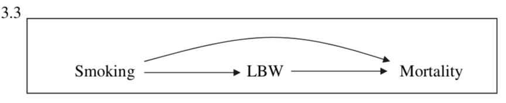
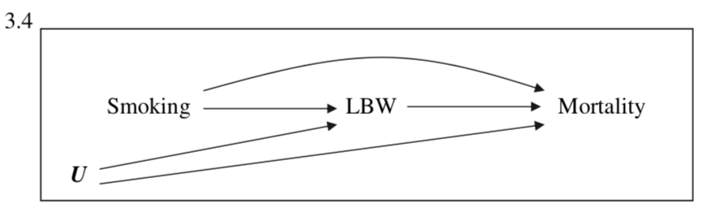

2.3 More progress (Scenarios 3 and 4)

This is a combination of Scenarios 1 and 2. This complete causal diagram tells us that smoking and mortality are dependent even if we condition on Low Birth Weight. According to Hernandez-Diaz et al., however, most experts find this scenario overly-simplistic. In this causal diagram, even some common causes were not listed as part of the diagram (which we now know is a bad practice!). Congenital defects or conditions such as preeclampsia would contribute to both lower birth weights and infant mortality rates.
So what if we do include an unknown factor, let’s say, U?

In a more realistic diagram, which is Scenario 4, an unknown (and often unmeasured) variable comes into play. With some foundational knowledge of forks and chains, we know that if we condition on Low Birth Weight, a second path opens up:
\[\text{Smoking} \rightarrow \text{LBW} \leftarrow \text{U} \rightarrow \text{Mortality}\]